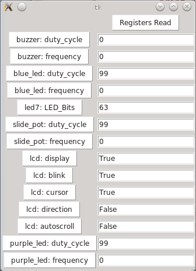

This is one of Wayne's many
electronics projects.
Configurator
Introduction
Configurator is a program that is used to configure
modules that make up an electronic project. At this
point in main window looks as follows:

The main window has three sub windows:
-
The left window is a "database" of available
modules. Currently modules can be selected by
Vendors, Categories, or by Buses. Currently,
the Vendors section is open with modules from
"adafruit.com", "sainsmart.com", and
"seedstudio.com" being shown. The LCD1602 was
copied over to the the Project under "LCD_Duino"
and renamed to "lcd".
-
The center window is the "Project" window that
shows the project as nested tree of interconnected
modules. This project is hosted by Raspbery Pi
computer, that has a RasPi bridge that connects
between the Raspberry Pi GPIO connector and a
MakerBus. There are 4 modules plugged into the
MakerBus -- LCD_Duino, Grove_Duino, TinkerKit_Duino,
and Gadget_Duino. All of the modules are
Arduino™ compatible board into
which shield can be plugge in MakerBus. The
LCD_Duino has an LCD shield plugged into it and
the Grove_Duino has a Grove shield plugged into it.
All names in the project tree names are specified
by the project designer.
-
The right window is called the module window and
it allows the Configurator to perform remote
procedure calls and examine registers on the
selected module. The currently selected module
is highlighted in the middle window. The [Get],
[Set], and [Call] buttons are used to directly
access the module. Currently, the user has
just sent the letter '@' to the LCD module via
the character_send() remote procedure
call.
The [Generate] button is used to generate code for the
various modules. For the example above, selecting one
of "LCD_Duino", "Grove_Duino", "TinkerKit_Duino", or
"Gadget_Duino" and clicking on the [Generate] button will
generate an Arduino™ .ino source file
that can be compiled and downloaded to appropriate
module. In addition, clicking on the [Generate] button
when "RasPi" is selected, will generate a Python module
that provides interfaces to all of the modules on the
the MakerBus. In addition, this Python module can be
executed as a stand-alone program and will generate a
GUI program (using Python Tkinter) that can directly
access all of the registers. A first cut is shown below:

That should provide enough of an overview for now.
The source code is available via
github. The know dependencies are:
-
Python 2.7 (Python 2.6 should work as well).
-
The appropriate idle (Python Integrated Deveolpment
Environment) that comes with Python (the tree widget
currently comes from idle.)
-
PySerial to talk to a serial port (USB or UART.)
Currently, you only need to have PySerial installed.
Configurator fails gracefully if it does not successfully
open /dev/ttyUSB0.
The
source code documentation is being converted to
Doxygen format. Doxygen version 1.8 is required
since much of the documentation is done in
Markdown format (which was recently added to
Doxygen 1.8.)
Copyright © 2012 by
Wayne C. Gramlich.